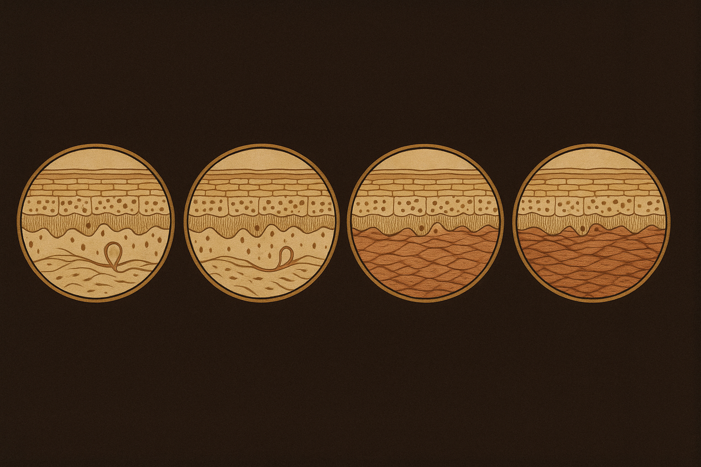
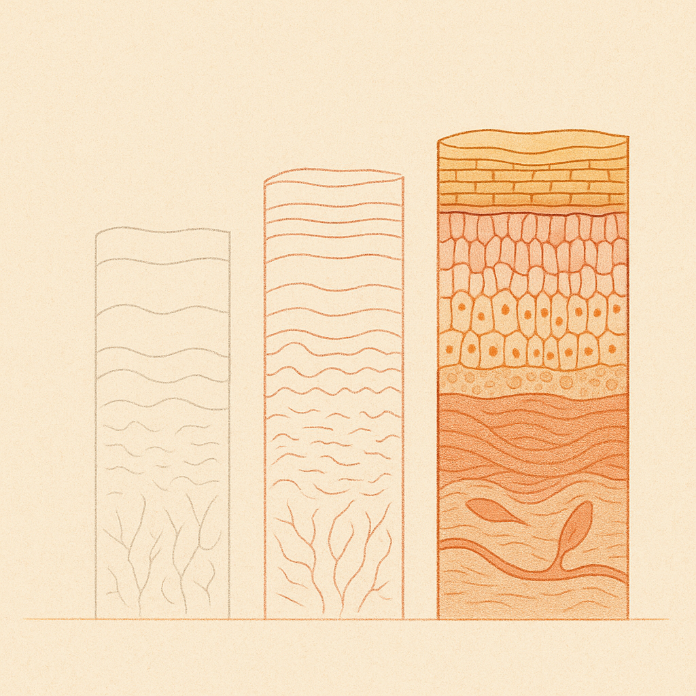
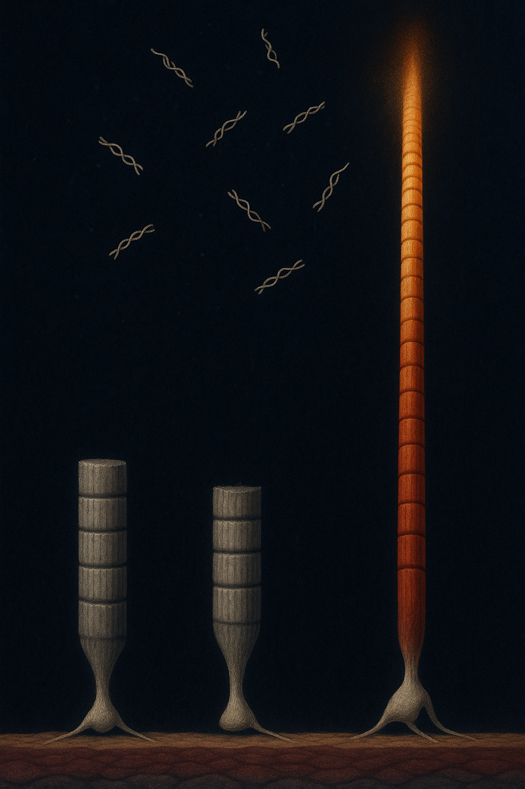

Review below. Reply approve to publish the Facebook post, or tell me edits.

Weeks one to three give you something. Week six gives you nothing, and that is exactly when most people quit.
Weeks one to three are quietly thrilling. Something shifts. Skin looks more awake in the morning, makeup sits better, and you catch yourself thinking this might actually be working.
Then week six arrives and the mirror looks the same as it did last Wednesday. Same face. Same everything. The obvious conclusion is that the routine stopped working. That instinct deserves credit. It is trying to protect your time and your money.
It is also, most of the time, wrong.
Skin does not improve at one speed. It improves at two.
The fast compartment is surface and fluid: water held in the outer layer, a settling of low-grade irritation, a smoother surface that scatters light evenly instead of catching it. These turn over in days. They respond quickly, they look terrific, and then they have nowhere left to go. A barrier that is already comfortable and hydrated cannot become more so.
The slow compartment is structural, and it moves in increments too small for any week-to-week comparison to resolve. It does not stop. It just never announces itself.
So the honest shape of progress is not a straight diagonal line. It is a fast gain that finishes early sitting on top of a slow gain that has barely started. Front-loaded, then flattening. Week six is where the fast part runs out and the slow part is all that is left.
Nobody compares today's face to the face they started with. You compare it to yesterday's face, and yesterday's face has already banked every gain you have made.
This is ordinary perceptual adaptation, the same reason you stop smelling a room two minutes after sitting in it. Your baseline resets to wherever you currently are, which produces an unfair result: the better your skin gets, the less progress you can perceive.
You cannot think your way out of it. The only defence is a fixed anchor from outside your own head, something you cannot argue with at 7am in a bathroom.
Consider what varies day to day, none of it related to your routine.
Sleep. Salt and a glass of wine the night before. Where you are in your cycle. A humidity swing, which in most Australian cities can be enormous inside one week. Bathroom downlights versus the car mirror, different enough to count as different faces.
Early on, the weekly change sits above all that. By week six it does not. When the real fortnightly effect is small and the daily variation is large, a single-day comparison returns a more or less random answer. You are not measuring your skin. You are measuring last night.
A Wednesday mirror check cannot work. That is arithmetic, not a character flaw.
Everyday load does not pause: incidental sun, friction, expression, time. At some point your weekly gain roughly matches that load and you move from improving to maintaining.
Maintenance is real, and invisible by definition, because the result is the absence of change. Nobody expects a visible weekly upgrade from sunscreen or flossing, and nobody calls them useless. This is skin longevity, and longevity is mostly made of things that do not photograph.
Here is the part that costs people years.
A new acid, a retinoid, an at-home LED device: each has its own settling-in period and its own eight to twelve week clock before it can show you anything. Quit at week six, start something else, and you have not moved forward. You have reset the clock to zero.
Do that four times a year, roughly six weeks each, and the ledger reads: twelve months of daily effort, real money spent, and not one completed trial. No answers either, because if you changed three things at once you destroyed any way of knowing which one did anything.
The true conclusion: the boring routine you actually finish beats the better routine you keep restarting. Which is why low-friction steps matter more than impressive ones. A ten minute ritual that survives a bad week is worth more than a twenty minute protocol you abandon in April.
The wider literature rewards patience too. In a 22 month trial of prescription topical tretinoin on photoaged skin, the improvements measured in the first four months held all the way to month 22 even as dose and frequency were reduced, and discrete pigment spots kept falling, ending 71% below baseline (Ellis et al., 1990). Same lesson: the interesting part sat well past the point most people would have quit.
None of it costs anything.
Set a fixed anchor. One photo, same window, same time of day, neutral expression, no makeup, monthly rather than daily. Daily photos just reproduce the noise problem in higher resolution.
Judge at eight weeks and at twelve. Never on a Wednesday.
Change one variable at a time and give it a full clock before deciding anything.
Write the start date down. Memory compresses badly, and by week six most people believe they began earlier than they did.
Miss a week, restart. Nothing dramatic is owed.
Then the genuine exceptions, where switching is exactly right: stinging, persistent redness, new breakouts, tightness, anything painful. Discomfort is a reason to stop. Boredom is not.
The flat stretch is not your skin giving up. It is the fast wins spent, your reference point moved, and the noise outgrowing the weekly signal, all at once, at the same predictable point.
Week six is not the verdict. It is just the least informative week to ask.
If you ever want a closer look at the mask itself, the spec is here.
A light therapy mask is a cosmetic device, not medicine.

Four skincare switches a year is twelve months of daily effort and not one finished trial.
Almost everyone quits at week five or six, and it is rarely the routine that failed.
The fast wins finish early. Surface hydration, less irritation, light bouncing evenly off smoother skin: those move in days, then have nowhere left to go. The slower structural change is still happening, it is just too small to see from one week to the next.
Your reference point moves. You compare today to yesterday, never to where you started, so the better your skin gets the less progress you can perceive. Same reason you stop smelling a room you are sitting in.
The noise beats the signal. Sleep, salt, a hot shower, cycle phase, the bathroom light: by week six the day to day variation is bigger than the weekly gain, so a Wednesday mirror check returns a random answer.
So the routine gets swapped, and every swap restarts an 8 to 12 week clock. That is where the twelve months goes. The boring routine you actually finish beats the better one you keep restarting.
What helps, whatever routine you are using: one photo, same window, same time of day, no makeup, once a month. Judge at 8 and 12 weeks, not on a Wednesday. Change one thing at a time.
One honest caveat: stinging, persistent redness or new breakouts are a real reason to stop. Boredom is not.
Which week do you usually give up at? Week two? Week six? Never past week one?
## Hashtags
#SkinScience #SkincareRoutine #SkinHealth #RedLightTherapy
FIRST COMMENT (keep this out of the caption): If you ever want a closer look at the mask, it is here: https://redermis.com.au/products/red-light-therapy-face-neck-mask

Week six is where almost everyone quits.
It is usually the worst possible moment.
Here is what is actually happening.
The quick wins are surface level: hydration, a bit of bounce, a smoother look. They land in days, then they are spent.
The slow changes are still moving. Structural work deeper down accumulates in fractions of a percent a week, which is real, and far too small to register in a mirror.
And you compare today to yesterday, never to where you started.
Sleep, salt, a hot shower, the bathroom light: by week six the noise is louder than the signal.
So you swap the routine. New product, new clock, another 8 to 12 weeks, again.
Four swaps a year is a year of effort and not one finished trial. The boring routine you finish beats the better one you keep restarting.
Free takeaway, costs nothing:
One photo. Same window, same time of day, no makeup. Once a month.
Judge at 8 and 12 weeks, not on a Wednesday in the bathroom mirror.
Change one thing at a time, or you will never know which thing worked.
What week are you at right now?
Mask and full spec are in the bio if you ever want a closer look.
## Hashtags
#skincarescience #skinlongevity #skincareroutine #skinhealth #australianskincare #redlighttherapy
## Title
The week six plateau: the worst week to judge your skin
## Description
Skin gives up its easy wins first. Hydration, tone and surface smoothness show within weeks. The slower work deeper in the dermis runs on a months-long clock and shifts too gradually to see in a daily mirror, so week six reads as a stall. Change anything, a new acid, a retinoid, an at-home device, and the clock restarts at zero. One photo, same window and time of day, no makeup, monthly. Judge it at eight weeks and twelve, and change one thing at a time or you never know which worked.
## CTA
The full article is here: https://redermis.com.au/blogs/journal/week-six-is-the-worst-week-to-judge-your-skin
## Hashtags
#SkincareRoutine #SkinScience #SkincareTips #SkinHealth #RedLightTherapy
Note: this pin reuses the Instagram image (instagram.png, 1024x1536, already Pinterest's native 2:3 pin ratio), with no text overlay. There is no Pinterest image prompt by design.